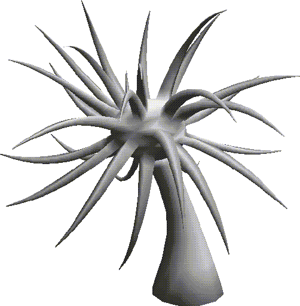
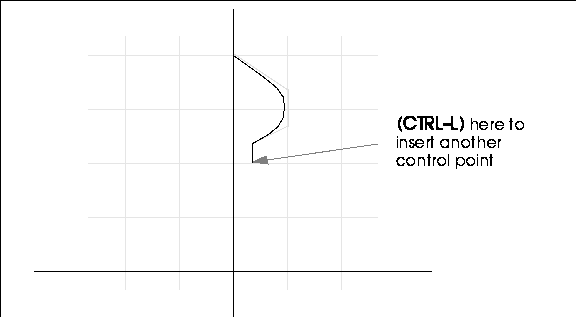
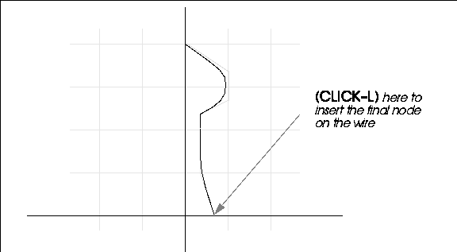
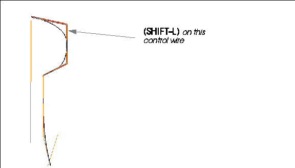
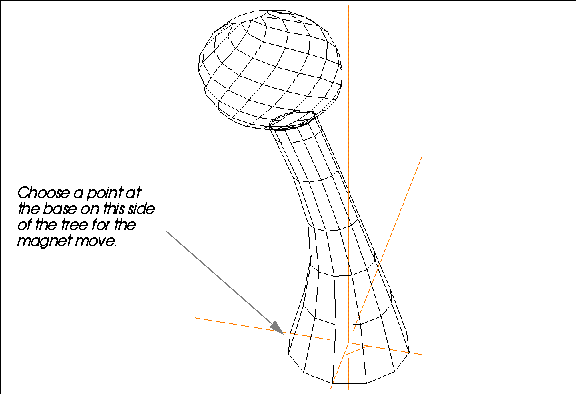
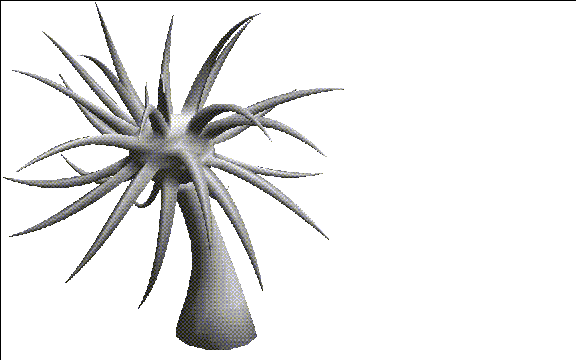

Plants are another type of organic object that pop up in lots of scenes. This chapter describes a technique for creating a fantasy tree.
You'll learn how to build a fantasy tree using some new techniques:
In this Chapter
In Chapter 17, "Reinstance, Copy, & Multiply" we'll describe another technique for creating a tree with hundreds or thousands of leaves.
Another way to create a tree is to start with a simple solid of rotation. A solid of rotation is made by sweeping a contour wire around an arbitrary axis and generating a solid shape from the "swept" area.
A Fantasy Tree
1. (CLICK-L) on GeoMenus>File>New Object>Solid of Rotation.
2. (CLICK-L) on the Set Sketch Params button.
3. To start the wire, move the cursor straight up the Y axis.
4. (CTRL-L) to place a control point right on the Y axis.
5. Move the cursor down and to the right, then (CTRL-L) again.
6. Move the cursor straight down, and use (CTRL-L) to insert a third control point.
7. Move the cursor back toward the Y axis, then (CLICK-L) in the position shown below:
8. Now, move the cursor straight down and (CTRL-L) to insert another control point.

9. Now, let's build the tree trunk.
10. Now, (CLICK-L) to add the final node on the wire, just about even with the X axis.

11. (CLICK-R) after you've drawn the final node on the wire.
12. (CLICK-L) on OK, Wire too.
14. (CLICK-L) on the Make Solid button.
Lowering Polygon Count for the Tree
This tree is fine if you have an unlimited number of faces for your object, but if polygon count is a consideration, you need to change the sampling of the wire:
15. (CLICK-L) on segments on the element sensitivity menu.
16. Turn on Visibility for the fantasy-tree-wire.
17. (SHIFT-L) on the control wire for the bulb portion of the tree.

18. (CLICK-L) on Change Sampling.
20. Now, repeat steps 17 and 18, this time with the control wire for the trunk portion of the tree.
21. (CLICK-L) on GeoMenus>File>New Object.
22. (CLICK-R) on solid of rotation.
23. Select the control wire from which to generate the solid of rotation.
24. Complete the Solid of Rotation parameters dialog box as described in step 13.
Prepping the Tree
25. Now, collect the points on top of the tree, almost down to the trunk.
26. (SHIFT-L) on the collection, then (CLICK-L) on Collapse.
The bulb of the tree is now ready for the Multiple Extrude we'll do a little later.
Bending the Tree
Now to give our tree a little more character, let's tilt it toward the sun.
27. (SHIFT-L) on the face on top of the bulb of the tree.
29. When prompted, select the Z axis.
31. Move the mouse to the left to bend the tree over.

Pulling Out the Branches
Now you can pull out some crazy branches for the tree:
32. Collect several faces on the bulb portion of the tree.
33. (SHIFT-L) on the collection.
34. (CLICK-L) on Multiple Extrude.
35. Use GeoMenus>Shading to turn shading on for the tree.

You've now learned some very useful new techniques for building complex shapes from other simpler shapes. Although the samples we used in this chapter were organic (plants) you could use most of the techniques described for a wide variety of tasks.
Congratulations!
Copyright © 1996, Nichimen Graphics Corporation. All rights reserved.